Какво е CSS?
CSS е стилов език, използван за описание на представянето на документ, написан на HTML или XML (включително XML диалекти като SVG, MathML или XHTML). CSS описва как елементите трябва да бъдат изобразени на екрана, на хартия, в речта или на други медии. Пълното наименование на CSS - Cascading Style Sheets разкрива, че характеристиките на елементите се предават каскадно. Тоест, ако един елемент има дадено свойство, то всички негови наследници ще имат същото това свойство, освен ако изрично не е указано друго. Уеб страниците са направени да изглеждат красиво и удобно за потребителя, именно с помощта на CSS.
Какво са правила в CSS?
CSS правилата са такива правила, които определят външния вид и представянето на уеб страниците. Те се използват за дефинирането на различни аспекти от дизайна на уеб сайтовете - цветове, позициониране, оформление и други визуални атрибути. Благодарение на CSS, може да се постигне консистентност при външния вид на даден сайт, както и да стане приятен за гледане и лесен и интуитивен за ползване. Ето така изглежда едно правило:
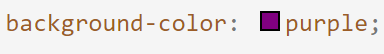Фигура 1. Правило за задаване на фонов цвят, личен пример.
Цъкнете върху снимката, ако искате да копирате кода като текст.
background-color:purple;
Код 1. Правило за задаване на фонов цвят, личен пример.
То се състои от две части - първата част задава за кой атрибут ще се присвои дадено свойство, след това има двоеточие, след което следва и втората част - стойността, която присвояваме на дадения атрибут. На примера background-color е атрибута, който ще променяме, а purple е стойността, която ще му присвоим. Така цветът на фона на съответния елемент ще стане лилав.
Понякога може да се случи така, че да имаме противоречиви правила, например авторът на документа задава едно правило, а читателят - друго. В такива ситуации, решението кое правило да се приложи към даден елемент се взима с помощта на клаузата !important, която се поставя на края на реда, за който искаме да важи. !important правилата са с по-висок приоритет при еднаква тежест на дефинициите. Също така, хубаво е да се запомни, че авторските правила отменят тези на читателя, когато и двамата ползват тази клауза. Пример за прилагането на тази клауза е показан на следващата картинка, където за всички заглавия от тип <h1> ще се приложи бял цвят на текста.
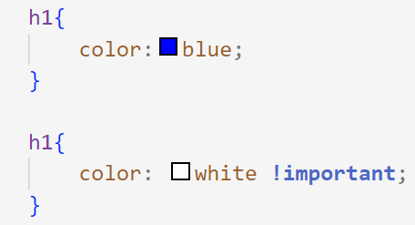Фигура 2. Пример за клаузата !important, личен пример.
Цъкнете върху снимката, ако искате да копирате кода като текст.
h1{
color: blue;
}
h1{
color: white !important;
}
Код 2. Пример за клаузата !important, личен пример.
Как се пише CSS (CSS стилове и синтаксис)?
Ако досега не сте се занимавали със CSS, то вероятно нямате представа как да свържете правилото, което току-що обсъдихме, заедно с елемента, за който искаме да го приложим. Както споменахме по-рано, чрез CSS се задва описание как ще бъдат изобразявани HTML и XML документи. Това описание се състои от така наречените CSS правила и елемента, когото искаме да променим. Всяко такова описание се състои от списък от селектори и от декларация. Списъкът от селектори указва елементът/елементите, за които се прилага декларацията. Декларацията пък определя как трябва да бъдат оформени елементите от списъка със селекторите. На примера по-долу е показано как всички елементи от тип <h1> и <h2> се представят удебелени и написани с шрифт Helvetica.
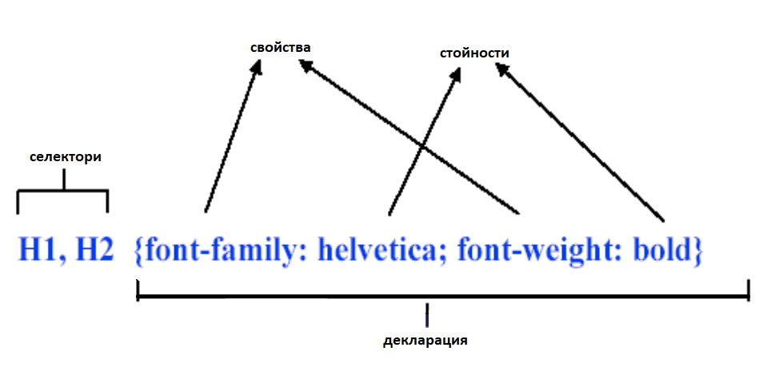Фигура 3. Пример за CSS синтаксис, пример от предходни лекции.
Цъкнете върху снимката, ако искате да копирате кода като текст.
h1,h2{font-family:helvetica;font-weight:bold}
Код 3. Пример за CSS синтаксис, пример от предходни лекции.
Този пример показва един цялостен стил в CSS. Тоест, CSS стилът се състои от списък от селектори и декларация, която представлява списък от CSS правила. Както може би предполагате, CSS стиловете се използват за определяне на външния вид и визуалното представяне на уеб страници, като всичко това се отделя от документа, дефиниращ структурата на уеб страниците.
Как се прилага CSS към даден документ?
Засега обяснихме как се пише CSS правило, както и какво представлява един CSS стил. Уви, понякога стилът може да изглежда по малко по-различен начин от показаното по-горе. Това се дължи на начина, по който ще свържем нашите правила с документа, за който те трябва да важат. Прилагането на CSS към даден HTML или XML документ става по един от следните три начина:
- Чрез вграден (inlining) стил - ползваме атрибута style. Този атрибут може да се приложи към всеки един елемент на body, освен basefront, param и script. Стойността на атрибута е една или повече двойки свойство - стойност, разделени с двоеточие. 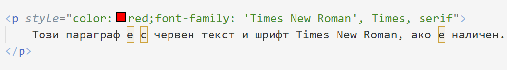
- Чрез вътрешен (embedded) стил - ползваме елемента style. Той се разполага в head, а неговият атрибут type определя CSS тип. 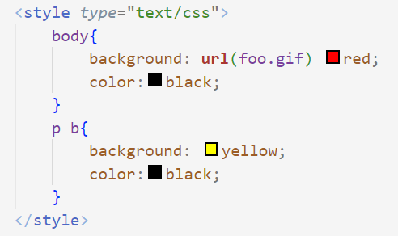
- Чрез използване на link за свързване с външна CSS дефиниция. 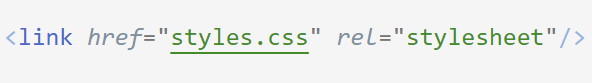
Фигура 4. Писане на стил в структурния документ чрез атрибута style, личен пример.
Цъкнете върху снимката, ако искате да копирате кода като текст.
<p style="color:red;font-family: 'Times New Roman', Times, serif">
Този параграф е с червен текст и шрифт Times New Roman, ако е наличен.
</p>
Код 4. Писане на стил в структурния документ чрез атрибута style, личен пример.
Тук CSS описанието е малко по-различно от досега обясняваното. Тъй като промяната на стила става директно при декларацията на дадения елемент, то не е необходимо да описваме селектори. Достатъчно е само да опишем атрибутите, които искаме да променим, заедно със съответните стойности, използвайки style атрибута.
Фигура 5. Писане на стил в структурния документ чрез елемента style, личен пример.
Цъкнете върху снимката, ако искате да копирате кода като текст.
<style type="text/css">
body{
background:url(foo.gif) red;
color:black;
}
p b{
background: yellow;
color: black;
}
</style>
Код 5. Писане на стил в структурния документ чрез елемента style, личен пример.
Тук CSS описанието е познатото ни със списък от селектори и дефиниции.
Фигура 6. Добавяне на отделен файл към структурния документ чрез link, личен пример.
Цъкнете върху снимката, ако искате да копирате кода като текст.
<link href="styles.css" rel="stylesheet"/>
Код 6. Писане на стилове в отделен документ, личен пример.
Тук не става ясно от примера, но в тази външна дефиниция правилата са описани както е показано в точка Какво са правила в CSS?. Ето така изглежда един примерен външен документ за CSS дефиниции.
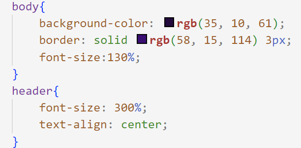Фигура 7. Писане на стилове в отделен документ, личен пример.
Цъкнете върху снимката, ако искате да копирате кода като текст.
body{
background-color:rgb(35,10,61);
border: solid rgb(58,15,114) 3px;
font-size: 130%;
}
header{
font-size:300%;
text-align:center;
}
Код 7. Писане на стилове в отделен документ, личен пример.
Какво са CSS класове?
Нека разгледаме в дълбочина какво точно са CSS класовете и как се използват. Те са именовани идентификатори, които могат да се приложат към HTML (или друг тип) елементи под формата на атрибути, с цел дефиниране на външен вид и поведение на тези елементи. Дефинирането на CSS класове е много лесно и става по следния начин:
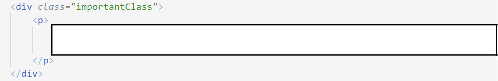Фигура 8. Дефиниране на клас като атрибут на елемент в структурния файл, личен пример.
Цъкнете върху снимката, ако искате да копирате кода като текст.
<div class="importantClass">
<p>
</p>
</div>
Код 8. Дефиниране на клас като атрибут на елемент в структурния файл, личен пример.
Ако някога сте програмирали на какъвто и да е език за програмиране, то сигурно се досещате, че повече от един елемента могат да са от един клас. Точно в това се крият предимствата от ползването на CSS класовете. Благодарение на тях може да се раздели структурата на документа и стиловете към него. Също така, CSS класовете предлагат и преизползваемост, тъй като можем да дефинираме класовете с определени стилове, които сметнем за подходящи, и да ги прилагаме към различни елементи на различни страници, вместо за всеки елемент да пишем поотделно едно и също, Това спомага и за консистентността на дизайна. Освен това, поддръжката е лесна, тъй като ако решим да променим нещо по дизайна, няма да се налага да променяме един след друг единични елементи, а можем директно да променим всичко наведнъж. А ето така се дефинират стилове чрез CSS клас, използвайки CSS класови селектор:
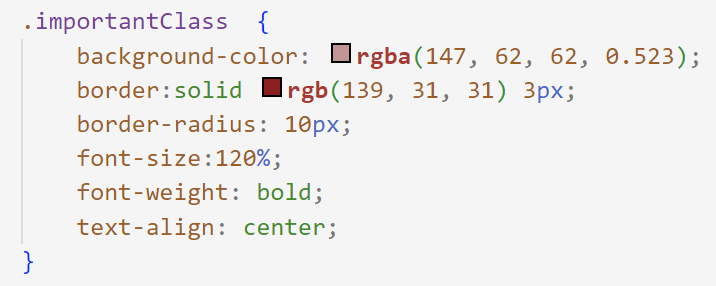Фигура 9. Дефиниране на стилове чрез клас, личен пример.
Цъкнете върху снимката, ако искате да копирате кода като текст.
.importantClass {
background-color: rgba(147, 62, 62, 0.523);
border:solid rgb(139, 31, 31) 3px;
border-radius: 10px;
font-size:120%;
font-weight: bold;
text-align: center;
}
Код 9. Дефиниране на стилове чрез клас, личен пример.
Плюсовете, които споменахме по-горе, са причината класовете да бъдат толкова често използвани при писане на CSS. Подобни на тях са идентификаторите, които също се задават като атрибут към даден елемент, но могат да се отнасят само до конкретен елемент, не може да има два елемента с еднакакъв идентификатор. Затова те се използват за специфични елементи, които трябва да се отличават от другите, но когато търсим еднаквост, то ползваме класове за по-лесно постигане на тази цел. Друго нещо, което ни осигурява още по-голяма свобода, е фактът, че един елемент не се ограничава до един клас, можем да добавим колкото си искаме класове към него, като ги изброяваме един след друг в кавичките, разделени само с празно пространство.
Bootstrap CSS класове
Bootstrap е популярен с това, че осигурява готови стилове и компоненти, които могат да бъдат използвани за бързо и лесно създаване на уеб страници и приложения. Той използва класове, за да дефинира елементи на страницата. Пример за това е следния CSS клас .btn, който може да се изпозва с елемент от тип <button>,<a> или <input>. Добавянето на атрибута class="btn" променя дизайна на елемента. Това е показано на следната картинка, където се вижда и как другите два класа .btn-success и .btn-danger променят дизайна на елемента. Също така, тази картинка може да послужи и за пример как на един елемент се дефинират повече от един класа.
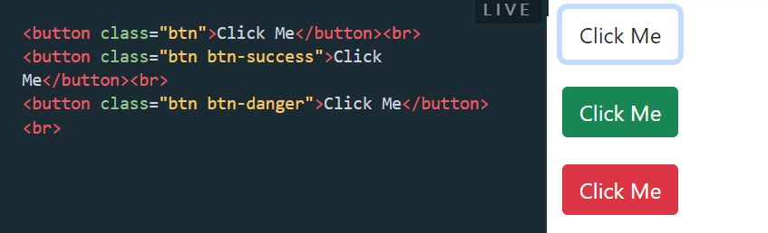Фигура 10. Bootstrap класове, [7].
Цъкнете върху снимката, ако искате да копирате кода като текст.
<button class="btn">Click Me</button><br>
<button class="btn btn-success">Click Me</button><br>
<button class="btn btn-danger">Click Me</button><br>
Код 10. Bootstrap класове, [7].
Псевдо-класове
При разясняването на различните типове селектори споменахме за псевдо-класове, но нека обясним по-подробно. Псевдо-класовете в CSS са специални ключови думи, които се използват, за да се стилизира даден елемент според неговото състояние, позиция или интеракция с потребителя, без да се налага да се променя кода на документа, който искаме да стилизираме. Те се изписват с двоеточие (:) пред името си, като както споменахме по-рано, не всички прилагат тип на елемент преди двоеточието, но повечето го правят, тъй като за тях е необходимо. Приложение на псевдо-класове е показано на тази снимка, като кодът гласи, че при преминаване на мишката над някоя връзка, цветът на текста и ще стане зелен.
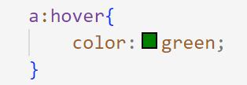Фигура 11. Псевдо клас за преминаване с мишката над даден елемент, личен пример.
Цъкнете върху снимката, ако искате да копирате кода като текст.
a:hover{
color:green;
}
Код 11. Псевдо клас за преминаване с мишката над даден елемент, личен пример.
Добра практика е да назовем класовете в съответствие с тяхната функция, а не с начина, по който ще изглеждат.
Какви стойности може да приема CSS селекторът?
Нека отново кажем какво са селекторите - те са елементи, които показват към кои части от структурния документ ще прилагаме дадени правила. От досегашните примери може би сте останали с впечатлението, че най-вероятно само елементите на описвания документ могат да са селектори. Това не е така, тъй като стойностите, които могат да са част от списъка със селектори, са най- разнообразни. Своеобразно можем да ги представим по следния начин:
Групиране на селектори
Както споменахме и по-рано, селекторите се използват за насочване и прилагане на стилове към конкретни HTML елементи. Има различни типове CSS селектори, като всичките са показани в таблицата по-долу и сега ще обясним по-подрабоно с какво точно се различават тези типове един от друг. Като за начало, нека ги разделим на шест групи, това са:
- Елементни селектори:
- Класови селектори:
- Селектори по идентификатори (ID селектори):
- Селектори по атрибути:
- Селектори по псевдо-класове:
- Селектори по псевдо-елементи:
Селектирането е базирано на елементите на документа, който искаме да стилизираме. Ако това е HTML документ, тогава подходящи примери са <p>,<div>, <table> и всички възможни HTML елементи (тагове). В таблицата по-долу, това са първите шест селектора, които показват освен как се селектира един определен елемент, така и повече, били те в определена йерархия, или не.
Селектирането става чрез class атрибута на елементите. Много различни елементи могат да принадлежат към един клас. Обикновено елементите в даден клас са групирани в него по даден признак. Селекторите в таблицата, които представят този начин на отбелязване, са седми, осми и девети. По-нататък ще обясним подробно какво е това CSS клас и как точно става селекцията по този начин.
Тук селектирането се позовава на атрибута id на елементите в документа, който искаме да стилизираме. За разлика от при class атрибута, тук елементите задължително имат уникален идентификатор, не може два елемента да притежават еднакъв такъв. Този тип селектиране е по-рядко срещан, защото се ползва само за конкретни случаи от дизайна, докато в повечето случаи, за много елементи могат и е удобно да се приложат еднакви характеристики. Десети ред от таблицата показва нагледно как се ползва този тип селектор.
Селектирането тук се базира на стойностите на определени атрибути. Може да се случи както чрез пълно съответствие на стойността, така и чрез определени части от нея. По-конретно, примери, свързани със селектирането по атрибути, са от ред дванадесет до ред осемнадесет включително, от таблицата по-долу.
Този тип селектори следят за специфични състояния или условия на елементите в документа, който ще стилизираме. Те обикновено следват следния шаблон на декларация - типътЕлемент:специфичнотоДейстиеИлиУсловиеНаЕлемента. Примери за такъв тип селектори са тези на редове 19, 22, 23 и на останалите след тях, които започват с две точки, намиращи се в таблицата по-долу.
Подобно на селекторите по псевдо-класове, тези по псевдо-елементи също следят за нещо специфично. Този път, вместо състояние или условие, се следи за специфични части на елементите на документа, който стилизираме. Примери за такива селектори са тези за първа буква на елемент (ред двадесет и осем от таблицата), както и за първи ред на елемент (ред двадесет и девет от таблицата). Също като при предния тип селектори, тези също следват определен шаблон на декларация, който изглежда така - типътЕлемент::специфичнатаЧастНаЕлемента. Точно така може да познаете и останалите селектори от този тип в табицата по-долу - те са тези, които започват с двойни две точки.
ВАЖНО! Някои селектори по псевдо-класове се ползват без да се задава тип на елемент. Пример за такъв селектор е :root, който селектира корена на документа и реално няма към кой конкретен елемент да се приложи, за разлика от останалите.
Таблица със селектори
| Номер | Селектор | Описание | Пример |
|---|---|---|---|
| 1 | елемент | избира всичките елементи от дадения тип | p - ще се отрази на всички <p> елементи |
| 2 | елемент1,елемент2 | избира всичките елементи от дадените типове, изброени със запетая; те могат да са повече от два | p,h1 - ще се отрази на всички елементи,които са или <p> или <h1> елементи |
| 3 | елемент1 елемент2 | избира всичките елементи от тип елемент2, които имат родител (не е нужно той да е пряк) от тип елемент1 | p h1 - ще се отрази на всички елементи от тип <h1>, които се падат наследници на елемент от тип <p> |
| 4 | елемент1>елемент2 | избира всичките елементи от тип елемент2, които имат родител (задължително пряк) от тип елемент1 | p>h1 - ще се отрази на всички елементи от тип <h1>, които се падат преки наследници на елемент от тип <p> |
| 5 | елемент1+елемент2 | избира всичките елементи от тип елемент2, ако те задължително следват след елемент от тип елемент1 и са на едно ниво в йерарахията (брат и сестра) | p+h1 - ще се отрази на всички елементи от тип <h1>, които задължително следват след елемент от тип <p> и са брат-сестра помежду си |
| 6 | елемент1~елемент2 | избира всичките елементи от тип елемент2, ако те следват след елемент от тип елемент1, но не е необходимо да се точно едни след друг, и са на едно ниво в йерарахията (брат и сестра) | p~h1 - ще се отрази на всички елементи от тип <h1>, които следват някъде след елемент от тип <p> (не е задължително да са един след друг) и са брат-сестра помежду си |
| 7 | .клас | избира всичките елементи, които принадлежат на съответния клас (имат такъв атрибут) | .firstClass - ще се отрази на всички елементи, които принадлежат на класа firstClass (имат такъв атрибут) |
| 8 | .клас1.клас2 | избира всичките елементи, които принадлежат и на двата класа (може и на повече, стига да са изброени) | .firstClass.secondClass - ще се отрази на всички елементи, които принадлежат както на класа firstClass, така и на класа secondClass (и двете стойности са зададени на съответния атрибут) |
| 9 | .клас1 .клас2 | избира всичките елементи от клас клас2, които са наследници на елементи,принадлежащи на клас клас1 | .firstClass .secondClass - ще се отрази на всички елементи, които принадлежат на класа firstClass и са наследници на елементи, които принадлежат на клас secondClass |
| 10 | #идентификационенНомер | избира елементът, който има зададен идентификационен номер, еднакъв с посочения | #idFirst - ще се отрази на елемента, който има идентификационен номер idFirst |
| 11 | * | избира всичките елементи | * - ще се отрази на всички елементи |
| 12 | [атрибут] | избира всичките елементи, които имат съответния атрибут | [target] - ще се отрази на всички елементи, които имат дефиниран атрибута target |
| 13 | [атрибут=стойност] | избира всичките елементи, които имат съответния атрибут с точно дадената стойност | [target="_blank"] - ще се отрази на всички елементи, които имат дефиниран атрибута target със стойност _blank |
| 14 | [атрибут~=стойност] | избира всичките елементи, които имат съответния атрибут и неговата стойност съдържа дадената като отделна дума | [title~="fl"] - ще се отрази на всички елементи, които имат дефиниран атрибута title със стойност, съдържаща fl |
| 15 | [атрибут|=стойност] | избира всичките елементи, които имат съответния атрибут, чиято стойност започва с дадената стойност като цяла дума | [lang|="en"] - ще се отрази на всички елементи, които имат дефиниран атрибута lang с начална стойност думата en |
| 16 | [атрибут^=стойност] | избира всичките елементи, които имат съответния атрибут, чиято стойност започва с дадената стойност | [href^="https"] - ще се отрази на всички елементи, които имат дефиниран атрибута href със стойност, започваща с https |
| 17 | [атрибут$=стойност] | избира всичките елементи, които имат съответния атрибут, чиято стойност завършва с дадената стойност | [href$=".pdf"] - ще се отрази на всички елементи, които имат дефиниран атрибута href със стойност, завършваща с .pdf |
| 18 | [атрибут*=стойност] | избира всичките елементи, които имат съответния атрибут, чиято стойност съдържа дадената | [href*="fl"] - ще се отрази на всички елементи, които имат дефиниран атрибута href със стойност, съдържаща fl |
| 19 | :active | избира активния линк | a:active |
| 20 | ::after | дава възможност за вмъкване след съдържанието на даден елемент | p::after |
| 21 | ::before | дава възможност за вмъкване преди съдържанието на даден елемент | p::before |
| 22 | :checked | избира всеки маркиран елемент (само конкретни елементи могат да бъдат маркирани) | p:checked |
| 23 | :default | избира елемента по подразбиране (само конкретни елементи могат да ползват :default) | input:default |
| 24 | :disabled | избира всички елементи, които са дективирани (само конкретни елементи могат да ползват :disabled) | input:disabled |
| 25 | :enabled | избира всички елементи, които са активирани (само конкретни елементи могат да ползват :enabled) | input:enabled |
| 26 | :empty | избира всички елементи, които нямат никакви насленици и съдържание | p:empty - ще избере празните параграфи |
| 27 | :first-child | избира всички елементи, които са първи наследници на родителите си | p:first-child |
| 28 | ::first-letter | избира първата буква на всеки елемент от типа на дадения | p::first-letter |
| 29 | ::first-line | избира първия ред на всеки елемент от типа на дадения | p::first-line |
| 30 | :first-of-type | избира всеки елемент, който е първият елемент от дадения тип, наследник на родителя си | p:first-of-type - избира всеки параграф, който е първи наследник параграф на родителя си |
| 31 | :focus | избира елементът, който има фокус (само конкретни елементи могат да ползват :focus) | input:focus |
| 32 | :fullscreen | избира елементът, който е на цял екран | :fullscreen |
| 33 | :hover | избира елементът, върху който е сложена мишката | a:hover |
| 34 | :in-range | избира елементът, който е в специфично множество от стойности (само конкретни елементи могат да ползват :in-range) | input:in-range |
| 35 | :indeterminate | избира елементите, които са в недетерминирано състояние (само конкретни елементи могат да ползват :indeterminate) | input:indeterminate |
| 36 | :invalid | избира елементите, които са с невалидна стойност (само конкретни елементи могат да ползват :invalid) | input:invalid |
| 37 | :lang(language) | избира всеки елемент от дадения тип с атрибут lang, притежаващ стойност, равна на подадената | p:lang(it) - елементите от тип параграф, които имат lang атрибут, равен на it |
| 38 | :last-child | избира всички елементи, които са последни наследници на родителите си | p:last-child |
| 39 | :last-of-type | избира всеки елемент, който е последният елемент от дадения тип, наследник на родителя си | p:last-of-type - избира всеки параграф, който е последния наследник парграф на родителя си |
| 40 | :link | избира всички непосетени линкове | a:link |
| 41 | ::marker | избира маркерите на елементите от списък | ::marker |
| 42 | :not(selector) | избира всеки елемент, който не е елемент от дадения тип | :not(p) - елементите, които не са параграфи |
| 43 | :nth-child(n) | избира всеки елемент, който е от дадения тип и е n-то дете на родителя си | p:nth-child(3) - избира третото дете на всеки параграф |
| 44 | :nth-last-child(n) | избира всеки елемент, който е от дадения тип и е n-то дете на родителя си, като се брои отзад напред | p:nth-last-child(3) - избира третото дете отзад напред на всеки параграф |
| 45 | :nth-last-of-type(n) | избира всеки елемент, който е от дадения тип и е n-то дете на родителя си от този тип отзад напред | p:nth-last-of-type(3) - избира третото дете параграф отзад напред на всеки параграф |
| 46 | :nth-of-type(n) | избира всеки елемент, който е от дадения тип и е n-то дете на родителя си от този тип | p:nth-of-type(3) - избира третото дете параграф на всеки параграф |
| 47 | :only-of-type | избира всеки елемент, който е от дадения тип и е единственото дете на родителя си от този тип | p:only-of-type - избира единственото дете параграф на всеки елемент |
| 48 | :only-child | избира всеки елемент, който е от дадения тип и е единственото дете на родителя си | p:only-child - избира единственото дете на всеки елемент, ако то е параграф |
| 49 | :optional | избира всеки елемент, който няма задължителни атрибути (само конкретни елементи могат да ползват :optional) | input:optional |
| 50 | :out-of-range | избира всеки елемент, който e със стойност, непринадлежаща на конкретно множество от стойности (само конкретни елементи могат да ползват :out-of-range) | input:out-of-range |
| 51 | ::placeholder | избира всеки елемент, който е със специфициран placeholder атрибут (само конкретни елементи могат да ползват ::placeholder) | input::placeholder |
| 52 | :read-only | избира всеки елемент, който е със специфициран readonly атрибут (само конкретни елементи могат да ползват :read-only) | input:read-only |
| 53 | :read-write | избира всеки елемент, който не е със специфициран readonly атрибут (само конкретни елементи могат да ползват :read-write) | input:read-write |
| 54 | :required | избира всеки елемент, който е със специфициран required атрибут (само конкретни елементи могат да ползват :required) | input:required |
| 55 | :root | избира корена на документа | :root |
| 56 | ::selection | избира каквото е селектирано от потребителя | ::selection |
| 57 | :target | избира активния #news елемент (кликнат URL с това име) | #news:target |
| 58 | :valid | избира всеки елемент, който е с валидна стойност(само конкретни елементи могат да ползват :valid) | input:valid |
| 59 | :visited | избира всички посетени линкове | a:visited |
Таблица 1. Таблица с различни селектори, [6].
Освен за всичко изброено дотук, селекторите служат и за приоритизиране на правилата, които ще се приложат към дадени елементи. За да е един селектор с по-голям приоритет, то той трябва да е по-специфичен от друг, а това се случва при следните три условия:
- Той има повече id атрибути
- Той има повече class атрибути
- Той има повече имена на елементи
Конкретни примери за това са:
- ul ul, който е по-специфичен от ul
- ul.importantClass, който е по-специфичен от ul ul ul...
- ul ul.importantClass, който е по-специфичен от ul.urgent
Какви са предимствата на CSS?
Някои от тези предимства може би са споменати и по-рано, но това е кратко обобщение на някои от предимствата, които CSS притежава:
- Намаляване на сложността и повторяемостта
- По-голяма гъвкавост и контрол върху характеристиките и внасянето на промени
- Предоставяне на възможност за показване на една уеб страница по различен начин в зависимост от параметрите на крайното устройство
- Подобряване на достъпността на съдържанието
- Лесна четимост и съответно бързи добавяне на нови неща и промяна на стари такива
Това се случва благодарение на възможността за разделение между стиловото оформление и структурираното маркъп съдържание. Така няколко страници могат да споделят едно форматиране.
Отново се дължи на разделянето на двата типа файлове.
Благодарение на CSS, хора с увреждания могат да имат достъп до съдържанието през подходящи за тях медии и по създадено специално за тях представяне. Например, хора с намалена зрителна способност могат да преглеждат даден сайт чрез подходящ изглед на сайта или чрез браилов четец. За Браилови устройства, както и за други такива, се използва конкретния атрибут media към елемента <link>
Източници:
- [1] W3schools.com. (2019). CSS Selectors. [online] Available at: https://www.w3schools.com/css/css_selectors.asp.
- [2] Engineering Education (EngEd) Program | Section. (n.d.). Types of CSS (Cascading Style Sheets). [online] Available at: https://www.section.io/engineering-education/types-of-styling-in-css/#:~:text=There%20are%203%20distinct%20methods.
- [3] W3Schools (2019). HTML CSS. [online] W3schools.com. Available at: https://www.w3schools.com/html/html_css.asp.
- [4] www.w3.org. (n.d.). Selectors Level 4. [online] Available at: https://www.w3.org/TR/selectors-4/ [Accessed 16 Apr. 2023].
- [5] www.w3schools.com. (n.d.). CSS :nth-child() Selector. [online] Available at: https://www.w3schools.com/cssref/sel_nth-child.php [Accessed 16 Apr. 2023].
- [6] www.w3schools.com. (n.d.). CSS Selectors Reference. [online] Available at: https://www.w3schools.com/csSref/css_selectors.php.
- [7] blog.hubspot.com. (n.d.). The Beginner’s Guide to CSS Classes. [online] Available at: https://blog.hubspot.com/website/what-is-css-class.
- [8] W3schools.com. (2019). CSS Specificity. [online] Available at: https://www.w3schools.com/css/css_specificity.asp.
- [9] GeeksforGeeks. (2018). How to apply !important in CSS? [online] Available at: https://www.geeksforgeeks.org/how-to-apply-important-in-css/.